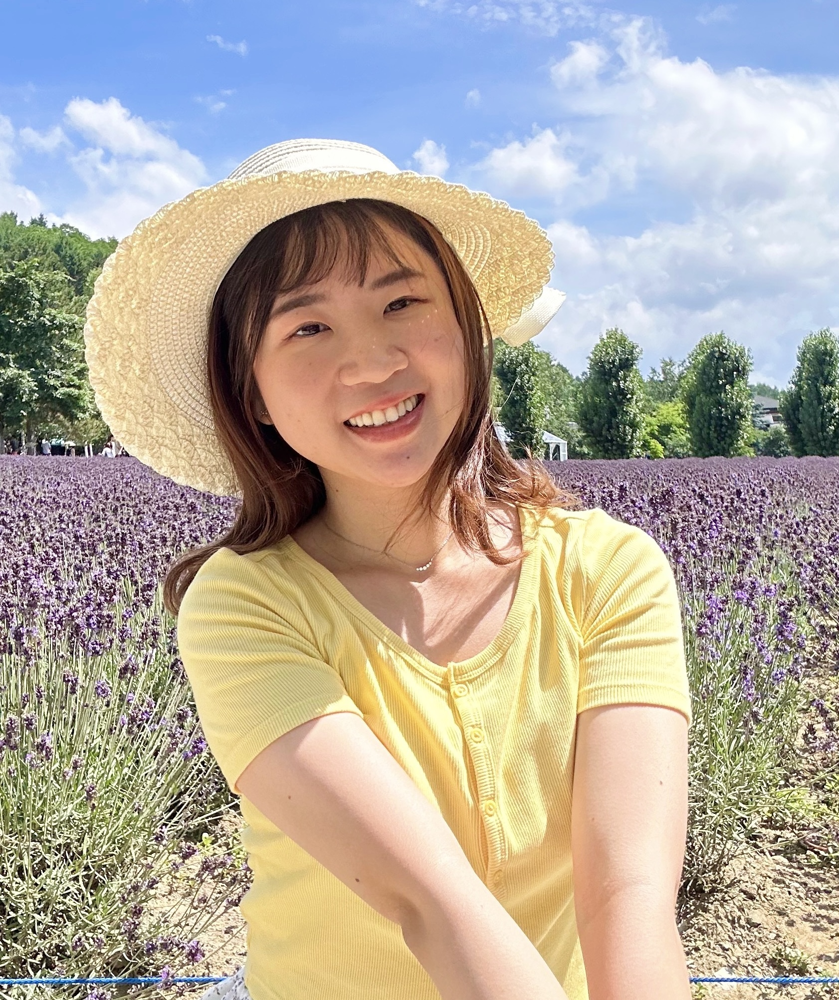
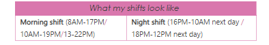
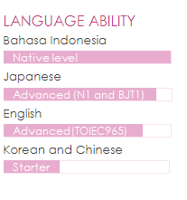

My Resume
WINDA NATASYA

Contact Me
Objective
To meet the needs and exceed expectations of guests. To ensure they have the best and memorable stay experience by eliminating the language barrier, responding timely to questions with a cheerful and warm attitude.
Education
- University of Indonesia (2014-2018) - Undergraduate of Nutrition Studies
- EVERGREEN JAPANESE SCHOOL(2014-2017) - Japanese Language
Experience
FRONT DESK AND GUEST RELATION Hotel Universal Port (Orix Hotel and Resorts) | Osaka, Japan | 2022-Now
My works as a front desk consists of 5 main things:
- Performing check in and check out (include of cashiering job and handling guest’s luggage).
- Answering questions directly, by phone or by email. Recommending nearby restaurants and shops. Guiding the road to airport or nearby attractions.
- Coordinating with others department (housekeeping, reservations, F&B) regarding rooms and plans.
- Assigning rooms and making sure the guests stay in the desired room type and in the right number of beds.
- Doing clerical jobs to make sure the workstation is suitable and clean to welcome guests.

PD SECRETARY AND JAPANESE INTERPRETER PT. Arthaasia Finance| Jakarta, Indonesia | 2020-2022
Support Japanese Director works as secretary, translate and interpret Japanese to Indonesia/English vice versa in, and dealing with business partner. Managing Japanese Executive’s schedules and making reservations for business trip (flight, hotel, restaurant, etc.).
